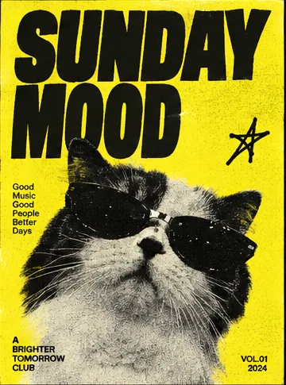
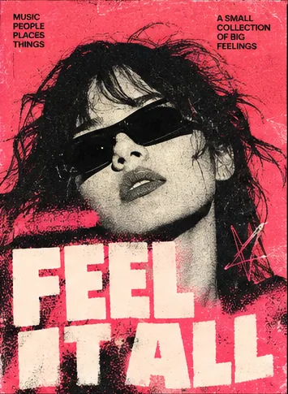
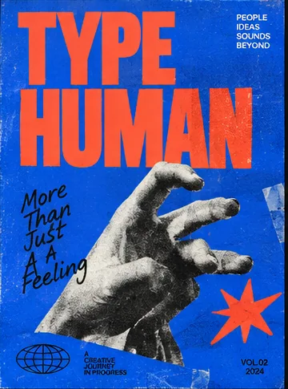
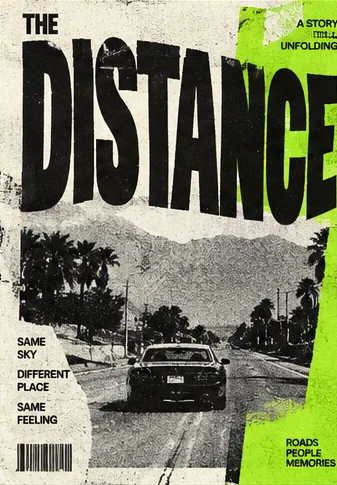
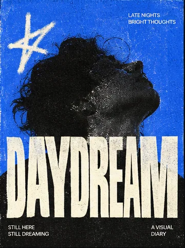
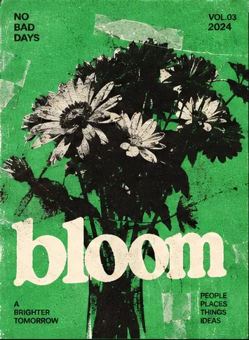
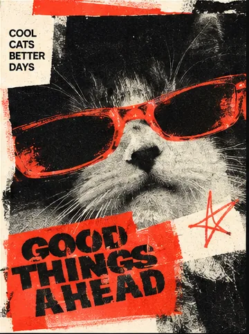
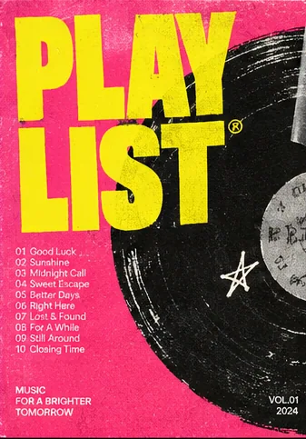

01 / MUSIC EXPERIENCEGLOBAL EXPERIENCEVISUAL SYSTEM2026
LISTEN BEYONDBORDERS
BLUE MEMORIESLUNE · BLUE HOUR
1:22 / 3:03
NOCTURNE MUSIC
Discover music through mood, place and motion.
选择一种情绪。
发现专辑、歌词与正在播放的声音。
THE IDEA / 01
OUR GOAL WAS TO DESIGN
A MUSIC EXPERIENCE
THAT FEELS ALIVE
AND MOVES WITH YOU
SO WE BUILT A CLEAR, IMMERSIVE SYSTEM THAT TURNS MOOD, CULTURE AND SOUND INTO ONE CONTINUOUS LISTENING JOURNEY.
NOCTURNEDISCOVERY
PLAYER
LYRICSABOUT
SYSTEMENTER SOUND ↗
PLAYER
LYRICSABOUT
SYSTEMENTER SOUND ↗
HEAR THE
MOMENT
THEY
REMEMBER
WE DESIGN MUSIC
AS A LIVING SPACE
FROM MOOD TO MOTION —
ONE CONTINUOUS EXPERIENCE
ACROSS CULTURES
THE SOUND
BETWEEN
MOMENTS
BLUE STATICLUNE · NIGHT SIGNALS
NOCTURNE°HEAR THE
MOMENTTHEY REMEMBER
MOMENTTHEY REMEMBER
RESPONSIVE EXPERIENCE / DESKTOP TO MOBILE
VISUAL SYSTEM / 03
#ECEFF2#090B0F#AEBFD1
HELVETICANEUE
DESIGNED FOR IMMERSIVE LISTENINGMODERN / GLOBAL / QUIET
02 / MUSIC ARTWORK海报与视觉表达 · 08 WORKS
A MOOD.
A MIX.
把海报放进正在播放的日常。
八种视觉情绪，八个聆听时刻。
⌄NOCTURNE / DAILY MIX···

Sunday MoodNOCTURNE · Visual sessions
⊕1:243:48
⤨Ⅰ◀▶▶Ⅰ↻
⌄NOCTURNE / DAILY MIX···

Feel It AllNOCTURNE · Visual sessions
⊕1:243:48
⤨Ⅰ◀▶▶Ⅰ↻
⌄NOCTURNE / DAILY MIX···

Type HumanNOCTURNE · Visual sessions
⊕1:243:48
⤨Ⅰ◀▶▶Ⅰ↻
⌄NOCTURNE / DAILY MIX···

The DistanceNOCTURNE · Visual sessions
⊕1:243:48
⤨Ⅰ◀▶▶Ⅰ↻
⌄NOCTURNE / DAILY MIX···

DaydreamNOCTURNE · Visual sessions
⊕1:243:48
⤨Ⅰ◀▶▶Ⅰ↻
⌄NOCTURNE / DAILY MIX···

BloomNOCTURNE · Visual sessions
⊕1:243:48
⤨Ⅰ◀▶▶Ⅰ↻
⌄NOCTURNE / DAILY MIX···

Good Things AheadNOCTURNE · Visual sessions
⊕1:243:48
⤨Ⅰ◀▶▶Ⅰ↻
⌄NOCTURNE / DAILY MIX···

PlaylistNOCTURNE · Visual sessions
⊕1:243:48
⤨Ⅰ◀▶▶Ⅰ↻